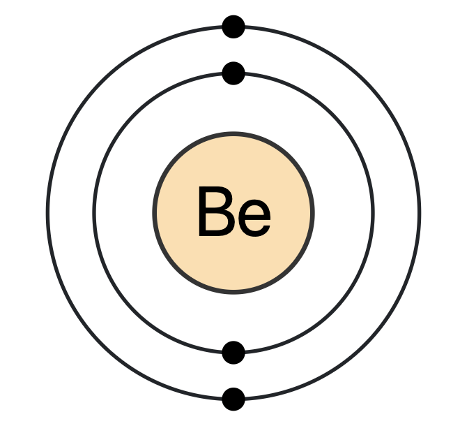

Atomic Number 4 | Lightweight Alkaline Earth Metal

Overview
Beryllium is a chemical element with the symbol Be and atomic number 4.
It is a relatively rare element in the universe, usually occurring as a product of
spallation of larger atomic nuclei that have collided with cosmic rays.
Within the Earth's crust, beryllium is most commonly found in minerals like beryl and chrysoberyl.
A hard, grayish metal naturally found in mineral rocks, coal, soil, and volcanic dust,
beryllium is used as an alloying agent in producing beryllium copper,
which is used in springs, electrical contacts, spot-welding electrodes, and non-sparking tools.
Properties & Uses
Atomic Number: 4
Atomic Mass: 9.0122 u
Electron Configuration: [He] 2s2
Group / Block: Alkaline Earth Metal (s-block)
Standard State: Solid at 25 °C
Melting Point: 1278 °C
Boiling Point: 2469 °C
Radioactive: No (stable isotopes exist)
Beryllium is known for its stiffness, light weight, and dimensional stability over a wide
temperature range. It's used in aerospace, telecommunications, X-ray diagnostics,
and as a moderator or reflector in nuclear reactors.
Beryllium in Action
Beryllium is a toxic metal that poses a health risk when inhaled as dust or fumes.
Chronic beryllium disease is a serious lung condition that can be fatal.
As a result, beryllium is handled with care in industrial settings,
and workers are advised to wear protective gear when working with beryllium-containing materials.
Historical Perspective
Beryllium was first discovered by Louis Nicolas Vauquelin in 1797,
who found it in beryl and emeralds.
It was independently isolated in 1828 by Friedrich Wöhler and Antoine Bussy
by reacting beryllium chloride with potassium.
Originally known as “glucinium” (meaning “sweet”) due to the
sweet taste of its salts, the name “beryllium” was officially adopted in 1957.
Today, beryllium production is carefully regulated because of its toxicity
when inhaled as dust or fumes.